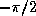

Common Lisp the Language, 2nd Edition
Some of the functions in this section, such as abs and signum, are apparently unrelated to trigonometric functions when considered as functions of real numbers only. The way in which they are extended to operate on complex numbers makes the trigonometric connection clear.
[Function]
abs number
Returns the absolute value of the argument. For a non-complex number x,
(abs x) == (if (minusp x) (- x) x)
and the result is always of the same type as the argument.
For a complex number z, the absolute value may be computed as
(sqrt (+ (expt (realpart z) 2) (expt (imagpart z) 2)))
For example:
(abs #c(3.0 -4.0)) => 5.0
The result of (abs #c(3 4)) may be either 5 or 5.0, depending on the implementation.
[Function]
phase number
The phase of a number is the angle part of its polar representation as a complex number. That is,
(phase z) == (atan (imagpart z) (realpart z))

The result is in radians, in the range -pi (exclusive)
to +pi (inclusive). The phase of a positive non-complex number
is zero; that of a negative non-complex number is pi.
The phase of zero is arbitrarily defined to be zero.


X3J13 voted in January 1989
(IEEE-ATAN-BRANCH-CUT)
to specify certain floating-point behavior when minus zero is supported;
phase is still defined in terms of atan as above,
but thanks to a change in atan the range of phase
becomes -pi inclusive to +pi inclusive. The value -
results from an argument
whose real part is negative and whose imaginary
part is minus zero. The phase function therefore has a branch cut
along the negative real axis. The phase of +0+0i is +0, of +0-0i is -0,
of -0+0i is +pi, and of -0-0i is -pi.

If the argument is a complex floating-point number, the result is a floating-point number of the same type as the components of the argument. If the argument is a floating-point number, the result is a floating-point number of the same type. If the argument is a rational number or complex rational number, the result is a single-format floating-point number.
[Function]
signum number
By definition,
(signum x) == (if (zerop x) x (/ x (abs x)))
For a rational number, signum will return one of -1, 0, or 1 according to whether the number is negative, zero, or positive. For a floating-point number, the result will be a floating-point number of the same format whose value is -1, 0, or 1. For a complex number z, (signum z) is a complex number of the same phase but with unit magnitude, unless z is a complex zero, in which case the result is z. For example:
(signum 0) => 0 (signum -3.7L5) => -1.0L0 (signum 4/5) => 1 (signum #C(7.5 10.0)) => #C(0.6 0.8) (signum #C(0.0 -14.7)) => #C(0.0 -1.0)
For non-complex rational numbers, signum is a rational function, but it may be irrational for complex arguments.
[Function]
sin radians
cos radians
tan radians
sin returns the sine of the argument, cos the cosine, and tan the tangent. The argument is in radians. The argument may be complex.
[Function]
cis radians
This computes .
The name cis means ``cos + i sin,'' because
 .
The argument is in
radians and may be any non-complex number. The result is a complex
number whose real part is the cosine of the argument and whose imaginary
part is the sine. Put another way, the result is a complex number whose
phase is the equal to the argument (mod 2)
and whose magnitude is unity.
.
The argument is in
radians and may be any non-complex number. The result is a complex
number whose real part is the cosine of the argument and whose imaginary
part is the sine. Put another way, the result is a complex number whose
phase is the equal to the argument (mod 2)
and whose magnitude is unity.
[Function]
asin number
acos number
asin returns the arc sine of the argument, and acos the arc cosine. The result is in radians. The argument may be complex.
The arc sine and arc cosine functions may be defined mathematically for an argument z as follows:
Arc sine Arc cosineNote that the result of asin or acos may be complex even if the argument is not complex; this occurs when the absolute value of the argument is greater than 1.
Kahan [25] suggests for acos the
defining formula
Arc cosineor even the much simpler . Both equations are mathematically equivalent to the formula shown above.
[Function]
atan y &optional x
An arc tangent is calculated and the result is returned in radians.
With two arguments y and x, neither argument may be complex. The result is the arc tangent of the quantity y/x. The signs of y and x are used to derive quadrant information; moreover, x may be zero provided y is not zero. The value of atan is always between -pi (exclusive) and +pi (inclusive). The following table details various special cases.
X3J13 voted in January 1989
(IEEE-ATAN-BRANCH-CUT)
to specify certain floating-point behavior when minus zero is supported.
When there is a minus zero, the preceding table must be modified slightly:
Note that the case y=0,x=0 is an error in the absence of minus zero,
but the four cases y=0,x=0 are defined in the presence of minus zero.
With only one argument y, the argument may be complex.
The result is the arc tangent of y, which may be defined by
the following formula:
Arc tangent
X3J13 voted in January 1989
(COMPLEX-ATAN-BRANCH-CUT)
to replace the preceding formula with the formula
log(1+iy) - log(1-iy)
Arc tangent ---------------------
2i
This change alters the direction of continuity for the
branch cuts, which alters the result returned by atan
only for arguments on the imaginary axis that
are of magnitude greater than 1.
See section 12.5.3 for further details.
For a non-complex argument y, the result is non-complex and lies between
 and  (both exclusive).
(both exclusive).
Common Lisp makes two-argument atan the standard one
with range -pi to +pi. Observe that this makes
the one-argument and two-argument versions of atan compatible
in the sense that the branch cuts do not fall in different places.
The Interlisp one-argument function arctan has a range
from 0 to pi, while nearly every other programming language
provides the range to for
one-argument arc tangent!
Nevertheless, since Interlisp uses the standard two-argument
version of arc tangent, its branch cuts are inconsistent anyway.
[Constant]
pi
This global variable has as its value the best possible approximation to pi in long floating-point format. For example:
(defun sind (x) ;The argument is in degrees (sin (* x (/ (float pi x) 180))))
An approximation to pi in some other precision can be obtained by writing (float pi x), where x is a floating-point number of the desired precision, or by writing (coerce pi type), where type is the name of the desired type, such as short-float.
[Function]
sinh number
cosh number
tanh number
asinh number
acosh number
atanh number
These functions compute the hyperbolic sine, cosine, tangent,
arc sine, arc cosine, and arc tangent functions, which are mathematically
defined for an argument z as follows:
Hyperbolic sine Hyperbolic cosine Hyperbolic tangent Hyperbolic arc sine Hyperbolic arc cosineHyperbolic arc tangent WRONG!
WARNING! The formula shown above for hyperbolic arc tangent is incorrect.
It is not a matter of incorrect branch cuts; it simply does not compute anything
like a hyperbolic arc tangent. This unfortunate error in the first edition
was the result of mistranscribing a (correct) APL formula from Penfield's paper
[36]. The formula should have been transcribed as
Hyperbolic arc tangentA proposal was submitted to X3J13 in September 1989 to replace the formulae for acosh and atanh. See section 12.5.3 for further discussion.
Note that the result of acosh may be complex even if the argument is not complex; this occurs when the argument is less than 1. Also, the result of atanh may be complex even if the argument is not complex; this occurs when the absolute value of the argument is greater than 1.